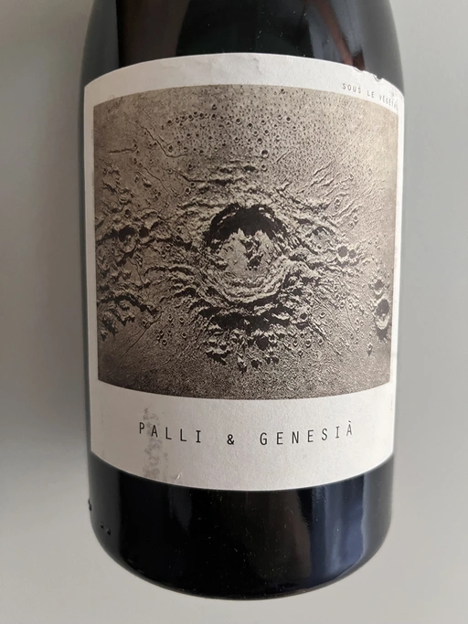

- Type
- White Still, Dry
- Producer
- Sous Le Végétal
- Vintage
- 2018
- Location
- Greece, Oinos
- Grapes
- Muscat de Samos
- Alcohol
- 13.5
- Sugar
- 2
- Price
- 1018 UAH
- Cellar
- N/A
Grapes for Palli et Genesia come from Platanos village at 450 m above sea level. It’s a resurrected vineyard growing on pink granite. Fruits are pressed by own weight (hey gravity), aka “free-run juice”. Macerated on the skins for 40 days in stainless tanks and then aged in 750 litres clay amphoras.
Producer
Sous le Végétal is a collaborative wine project between Jason Ligas of Domine Ligas and Patrick Bouju of Domaine la Bohéme. This project finds them on the beautiful island of Samos in Greece, located one mile off the coast of Turkey.
Sous le Végétal actively avoids the industrial farming practices that dominate winemaking in Greece and have opted to do extensive work in the vineyards to restore a healthy permaculture for their vines and the rich assortment of volcanic soils. Their farming practices are biodynamic and organic, down to the utilization of herbs and natural balms to heal and protect the vines.
Each cuvée features Muscat Blanc à Petits Grains. The goal of this project is to show the different expressions of this grape in all of the different microclimates on the island. Every grape is harvested by hand and fermented and aged in a succession of vessels specific to each wine.
In Jason’s words, “This project is entirely geared towards a very specific level of quality, and in order to nourish this project, I rely on the microcosmos, on the infinitely small. Furthermore, I believe in the infinitely slow.”
Ratings
2022-09-27 - 8.50
Some sources say there was maceration on the skins for 40 days in stainless tanks. No traces of that, but instead, flor-dominated nose. Jerez, soaked apples, VA, jasmine, honey, and citrus. Dry, medium-full bodied with crisp acidity, good balance, persistent aftertaste and powerful intensity of flavours. Not for everyone, but I love this style.
Wine #3 on Mixed Bag Vol. 4.
Related